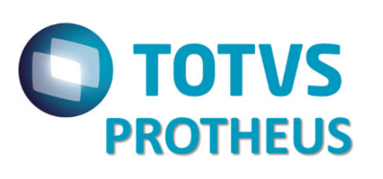
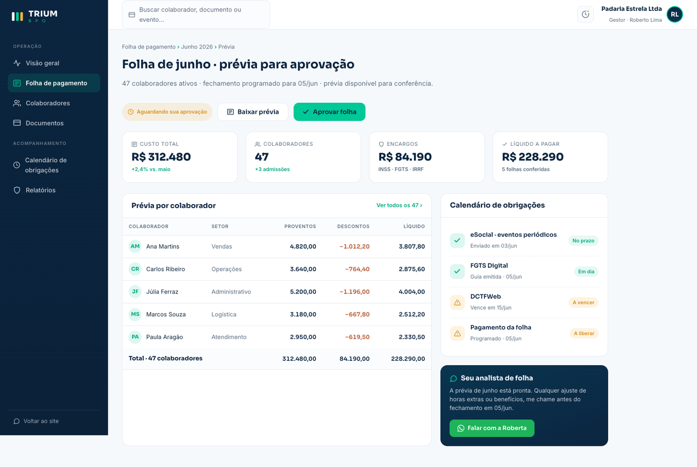
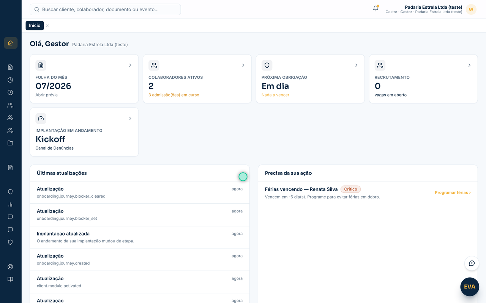
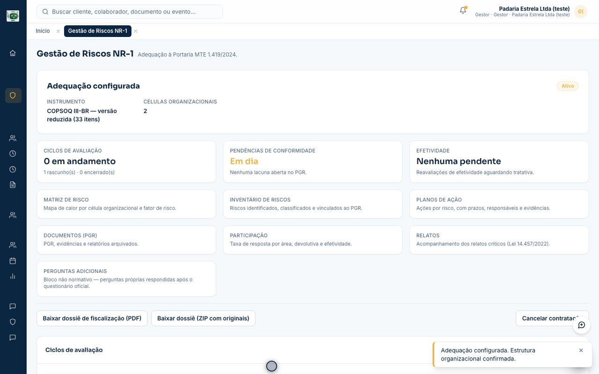
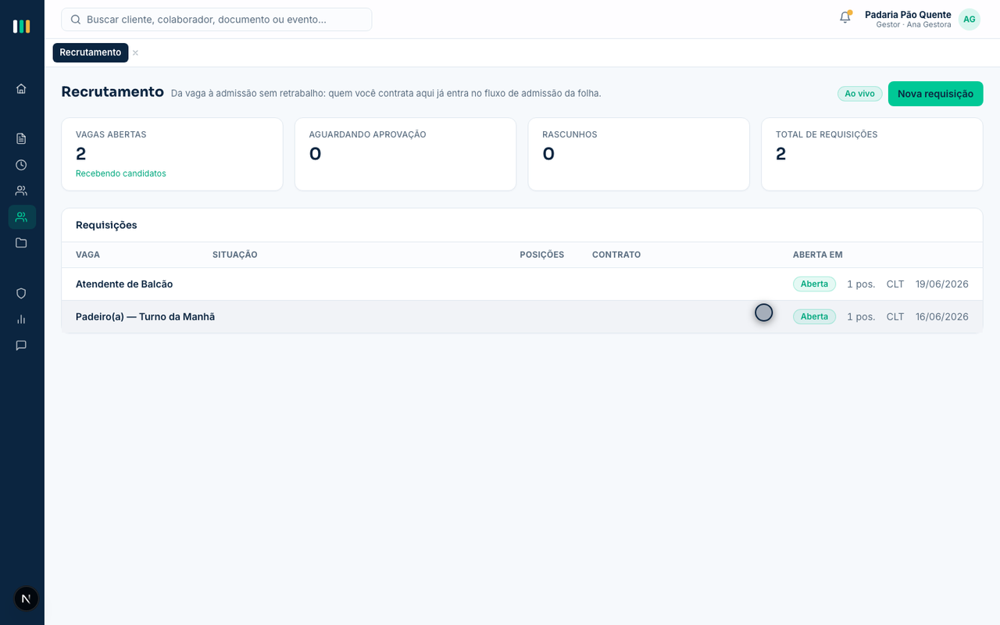
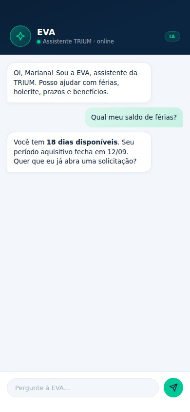

Colaborador PF
App do colaborador CLT
Acesso sem senha, holerites, documentos, férias e perfil — instalável no celular.
- 01Acesso
- 02Holerites
- 03Documentos
- 04Férias
- 05Perfil
A TRIUM assume a folha de pagamento e o departamento pessoal com compliance e eSocial sob controle — motor de cálculo em TOTVS Protheus — e um portal digital onde o gestor, o colaborador e os módulos opcionais (ponto, benefícios, recrutamento, denúncias, NR-1, PJs) convivem. Você cuida do negócio. A burocracia fica com a gente.
Cálculo e eSocial no TOTVS Protheus

A TRIUM orquestra portal, prévia e módulos. O Protheus calcula a folha, encargos e a trilha de obrigações — engine de mercado, operação boutique.
Na maioria das empresas do nosso porte, a folha é um serviço agregado do escritório contábil. Feita no prazo apertado, sem prévia, sem portal e sem ninguém monitorando o que muda na lei — nem o resto da rotina de gente.
Prazos de eSocial, FGTS Digital, NR-1 e obrigações mensais mudam o tempo todo. Quando o erro aparece, a multa já é retroativa e o problema virou seu.
Admissão, férias, atestado, rescisão, benefício, ponto. Sem um DP estruturado, tudo isso para na mesa do dono ou de um administrativo sobrecarregado.
Você recebe a folha pronta, sem prévia para conferir e sem relatório de custo. O colaborador pede holerite por mensagem e espera dias pela resposta.
Ponto num sistema, benefícios e denúncias em planilha, recrutamento em e-mail, PJs em conversas soltas. Cada demanda vira um sistema novo — e ninguém enxerga o quadro inteiro.
FOPA é o núcleo da TRIUM: folha, DP, eSocial e portal digital incluídos. Módulos opcionais completam a operação no mesmo portal — sem trocar de sistema a cada demanda.
Cálculo mensal completo no motor TOTVS Protheus, com prévia para sua aprovação antes do fechamento.
Toda a rotina do colaborador, da admissão ao desligamento, sem parar na sua mesa.
Compliance trabalhista monitorado todos os dias, não só no fechamento.
Portal do gestor e app do colaborador no mesmo contrato — sem software à parte.
Além do FOPA, a TRIUM opera módulos contratáveis no portal.triumbpo.com.br — ponto, benefícios, recrutamento, denúncias, NR-1 e gestão de PJs. Você ativa o que faz sentido; o time e o colaborador usam o mesmo login.
Coleta e tratamento de jornada desenhados sobre a Portaria 671, com espelho e exportação para a folha.
VT, VR/VA, plano de saúde e demais benefícios administrados no mesmo ambiente da folha — do desenho do pacote ao desconto certo no holerite.
Da vaga à admissão no mesmo cadastro da folha — sem ATS solto e sem re-digitação.
Canal confidencial alinhado à Lei 14.457/2022, com protocolo e ouvidoria dedicada.
Adequação à Portaria MTE 1.419/2024 (NR-1): fatores psicossociais no PGR, com pesquisa, matriz, planos e dossiê para fiscalização.
Prestadores e contratos em trilho separado do CLT, com guardrails contra pejotização irregular.
Migrar de fornecedor de folha parece arriscado. Nosso processo foi desenhado para a transição acontecer sem nenhum colaborador perceber — e para módulos extras entrarem sem novo projeto de zero.
Analisamos sua folha atual e apontamos riscos de compliance, erros de cálculo e oportunidades de economia. Também enxergamos se ponto, denúncias, NR-1 ou PJs entram no desenho. Você recebe o relatório mesmo se não fechar com a gente.
Migramos cadastros, históricos e rodamos uma folha em paralelo com a atual. O portal do cliente e o app do colaborador sobem juntos; módulos opcionais ativam no mesmo ambiente.
Calendário mensal, prévia para aprovação, fechamento no prazo e chat direto com quem opera a sua carteira — com os módulos contratados no mesmo portal.
O portal do cliente e o app do colaborador vêm com o FOPA. Módulos opcionais entram no mesmo ambiente — sem instalar nada e sem planilha paralela.

Imagem ilustrativaRevise a prévia, confira custos e encargos e aprove o fechamento sem trocar planilha por e-mail.
Jornada, eSocial, FGTS Digital e pagamentos com prazos à vista — nada passa batido.
Holerites, documentos, férias e, quando contratados, ponto e canal de denúncias no celular.
Denúncias (Lei 14.457), riscos psicossociais NR-1 (Portaria MTE 1.419/2024) e documentos do DP no mesmo ambiente do gestor.
Vaga, pipeline e oferta convergem para o cadastro de DP — sem re-digitação.
Contratos e fluxo de NF de prestadores em trilho separado do CLT, com visão do gestor.
Colaborador CLT e prestador PJ — cada um no seu app. Gravado no produto, dados de demonstração.
Loop silencioso · ambiente de demonstração
Portal web do cliente: home, folha, recrutamento e NR-1 no mesmo login.



A EVA é a assistente de IA da plataforma TRIUM. Ela conhece a folha da sua empresa e resolve na conversa o que hoje vira chamado: dúvida de holerite, saldo de férias, prazo de obrigação, documento. E quando o assunto precisa de um humano, ela chama o analista da sua carteira — sem fila, sem formulário.

Loop silencioso · ambiente de demonstração
Respeitamos o seu contador e trabalhamos junto com ele. Mas folha de pagamento é uma disciplina própria, e tratar como serviço agregado custa caro.
| O que você recebe | TRIUM BPO | Folha no escritório contábil |
|---|---|---|
| Prévia da folha antes do fechamento | Sempre, todo mês | Raramente |
| Motor de folha de mercado | TOTVS Protheus | Planilha ou sistema genérico |
| Portal do gestor + app do colaborador | Incluído no FOPA | Não oferece ou cobra à parte |
| Ponto, benefícios, denúncias, NR-1 e PJs no mesmo ambiente | Módulos no mesmo portal | Ferramentas soltas ou inexistentes |
| Monitoramento de prazos e legislação | Diário e proativo | Reativo, no fechamento |
| Acompanhamento de convenção coletiva | Por sindicato e categoria | Quando o cliente avisa |
| Canal de atendimento | Chat direto com o especialista | Email com fila de espera |
| Assistente de IA para dúvidas de folha | EVA, no portal e no app | Não existe |
| Relatório gerencial de custo de pessoal | Todo mês | Sob demanda |
Cada setor tem sindicato, convenção coletiva e rotina próprios. Operamos a folha com as particularidades de cada um, sem tratamento genérico.
Turnos, insalubridade, periculosidade e adicionais calculados sem erro.
Escalas, domingos e feriados, comissões e alta rotatividade sob controle.
Da agência à prestadora técnica, com benefícios e jornadas bem definidos.
Plantões, adicionais noturnos e categorias profissionais com piso próprio.
Escala 6x1, gorjetas, turnos quebrados e a convenção do setor em dia.
Jornadas especiais, diárias e horas de espera tratadas conforme a lei.
A TRIUM combina a liderança direta de duas profissionais experientes com uma célula de analistas de folha dedicados. Você sempre sabe quem opera a sua carteira e fala direto com essa pessoa.
Especialista em departamento pessoal. Lidera a célula de analistas, define o padrão de qualidade e supervisiona cada fechamento antes de chegar a você.
Advogada. Responsável pelo compliance trabalhista, pelos contratos e pela leitura jurídica de convenções coletivas e mudanças na lei que afetam a sua folha.
Analistas plenos e juniores dedicados por carteira de clientes, sob supervisão direta da Roberta. Modelo boutique: poucos clientes por analista, prévia todo mês e resposta em até um dia útil.
Não. A TRIUM assume a folha e o departamento pessoal. Seu contador continua cuidando da contabilidade e do fiscal, e nós entregamos a ele todos os relatórios e integrações que precisar. Na prática, o trabalho dele fica mais fácil.
Nosso foco são empresas a partir de 10 colaboradores, justamente as que não têm RH interno ou têm uma equipe pequena. É nesse porte que a terceirização traz mais retorno, porque o custo de um erro de folha ou de uma multa é proporcionalmente muito maior.
O valor é por colaborador ativo por mês (e, em alguns módulos, por prestador), com o portal digital já incluído no FOPA. Cada proposta é montada sob medida após o diagnóstico gratuito, de acordo com o porte, a complexidade e os módulos que você quiser ativar. Não publicamos tabela fixa no site.
É o ambiente digital (portal.triumbpo.com.br) onde o gestor acompanha a folha: prévia, custos, documentos, solicitações e obrigações. O colaborador usa o app para holerites, documentos e, se contratados, ponto, benefícios e canal de denúncias. Módulos opcionais entram no mesmo login.
No mesmo portal: Solução de Ponto (Portaria 671), Gestão de Benefícios (VT, VR/VA, plano de saúde e similares, com desconto direto na folha), Recrutamento (da vaga à admissão), Canal de Denúncias (Lei 14.457), Gestão de Riscos NR-1 (Portaria MTE 1.419/2024 — psicossocial no PGR) e Gestão de PJs (prestadores em trilho separado do CLT). Você contrata o que precisa; o FOPA é o núcleo.
A EVA é a assistente de inteligência artificial da plataforma TRIUM, disponível no portal e no app. Ela conhece a folha da sua empresa e responde na hora: saldo de férias, holerite, prazos, benefícios e documentos. Também abre solicitações na própria conversa e, quando o assunto precisa de um humano, aciona o analista da sua carteira. Vem incluída no FOPA, sem custo à parte, com dados tratados conforme a LGPD.
Sim para ponto, benefícios, denúncias e NR-1 como módulos no desenho da TRIUM — o diagnóstico define se entram com o FOPA ou em configuração específica. Recrutamento roda sobre a relação de folha/DP (não vendemos um ATS solto). Em todos os casos o ambiente é o mesmo portal.
A Portaria MTE 1.419/2024 exige gestão de riscos psicossociais no PGR. No módulo você escolhe o instrumento científico (COPSOQ III-BR ou HSE Indicator Tool), roda o ciclo com anonimato por desenho, gera inventário, planos e dossiê. A TRIUM/plataforma não substitui o profissional: você nomeia responsável técnico e, quando preciso, psicólogo independente para relatos críticos e revisão do inventário — a ferramenta organiza, documenta e evidencia.
Sim. Dados de folha e de gente são sensíveis pela LGPD e tratamos como tal. Operamos com acordo de tratamento de dados em todos os contratos, acesso segregado por cliente e processos desenhados para a lei brasileira de proteção de dados. No canal de denúncias, o conteúdo da apuração fica restrito ao ouvidor autorizado.
No motor TOTVS Protheus — o engine de folha de mercado que a TRIUM opera. Nossa plataforma cuida do portal, da prévia, dos apps e dos módulos (ponto, denúncias, NR-1, PJs); o Protheus faz o cálculo, os encargos e a trilha de eSocial/obrigações.
Sem problema. No diagnóstico avaliamos o que você já usa e definimos juntos o melhor caminho. Podemos migrar a operação para o TOTVS Protheus com a TRIUM ou avaliar a operação sobre a sua ferramenta atual; módulos como ponto e portal do colaborador também se encaixam nesse desenho.
Em uma conversa de 30 minutos, entendemos sua operação e devolvemos um relatório com riscos, custos e o que dá para melhorar. Sem compromisso.